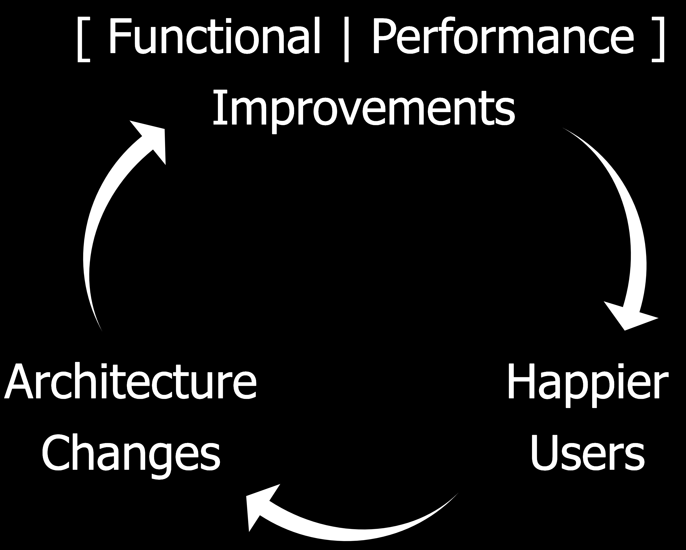

<!DOCTYPE html>
<html lang="en">
  <head>
    <meta charset="utf-8" />
    <meta name="viewport" content="width=device-width, initial-scale=1.0, maximum-scale=1.0, user-scalable=no" />

    <title>reveal-md</title>
    <link rel="stylesheet" href="./css/reveal.css" />
    <link rel="stylesheet" href="./css/theme/night.css" id="theme" />
    <link rel="stylesheet" href="./css/highlight/zenburn.css" />
    <link rel="stylesheet" href="./css/print/paper.css" type="text/css" media="print" />

  </head>
  <body>
    <div class="reveal">
      <div class="slides"><section  data-markdown><script type="text/template">## What's Fitness Function-Driven Development for Operability?

--------

Monitorama Baltimore 2019 | @joatmon08
</script></section><section  data-markdown><script type="text/template">
Slides: [joatmon08.github.io/2019-monitorama](https://joatmon08.github.io/2019-monitorama)

VS Code Live Share: [hashi.co/2019-monitorama](https://hashi.co/2019-monitorama)
</script></section><section  data-markdown><script type="text/template">
#### Evolutionary Architecture


</script></section><section  data-markdown><script type="text/template">
### Architectural changes affect everyone...

Security

Compliance

"Operations"

Development

Infrastructure

"Platform"

Finance
</script></section><section  data-markdown><script type="text/template">
### And the way they operate.

-------

| Architectural Change | Operational Change |
|:---|:---|
| Container architecture | Vulnerability Management |
| Microservices | Observability |
| GDPR | Data Inventory Reporting |
| Continuous Delivery | Change Advisory Boards? |
</script></section><section  data-markdown><script type="text/template">
### Operability

> is the ability to keep a system in secure and reliable functioning condition
</script></section><section  data-markdown><script type="text/template">
### A Fitness Function

> is a particular type of objective function that is used to
> summarize __how close__ a given design solution is to achieving the set aims.

<small>"Building Evolutionary Architectures" by Neal Ford, Rebecca Parsons, & Patrick Kua</small>
</script></section><section  data-markdown><script type="text/template">

</script></section><section  data-markdown><script type="text/template">
### Fitness Function-Driven Development

> introduces continuous feedback for architectural conformance and
> inform the development process as it happens, rather than after the fact.

<small>[Fitness Function-Driven Development](https://www.thoughtworks.com/insights/articles/fitness-function-driven-development) by Rosemary Wang & Paula Paul</small>
</script></section><section  data-markdown><script type="text/template">
### Let's try this.

Security ❤️

### [hashi.co/2019-monitorama](https://hashi.co/2019-monitorama)
</script></section><section  data-markdown><script type="text/template">

</script></section><section  data-markdown><script type="text/template">
### What did we like about it?

- KonMari method for former assumptions, tools, and telemetry
- Highlight gaps in process, tooling, and telemetry
- Relate technical decisioning to business value
- Organize stakeholder aims
</script></section><section  data-markdown><script type="text/template">
### What would we improve?

- Try not to over-optimize
- Balance implemention with review from stakeholders
</script></section><section  data-markdown><script type="text/template">
## What changed in our architecture that affects how effectively we operate?
</script></section><section  data-markdown><script type="text/template">
## References

- [github.com/joatmon08/2019-monitorama](https://github.com/joatmon08/2019-monitorama)
- [Fitness Function-Driven
  Development](https://www.thoughtworks.com/insights/articles/fitness-function-driven-development)
- [Building Evolutionary Architectures by Neal Ford, Rebecca Parsons, & Patrick Kua](https://www.thoughtworks.com/books/building-evolutionary-architectures)
</script></section><section  data-markdown><script type="text/template">
## Thank you!

-----

Rosemary Wang (she/her)

@joatmon08

Developer Advocate, HashiCorp</script></section></div>
    </div>

    <script src="./js/reveal.js"></script>

    <script>
      function extend() {
        var target = {};
        for (var i = 0; i < arguments.length; i++) {
          var source = arguments[i];
          for (var key in source) {
            if (source.hasOwnProperty(key)) {
              target[key] = source[key];
            }
          }
        }
        return target;
      }

      // Optional libraries used to extend on reveal.js
      var deps = [
        { src: './plugin/markdown/marked.js', condition: function() { return !!document.querySelector('[data-markdown]'); } },
        { src: './plugin/markdown/markdown.js', condition: function() { return !!document.querySelector('[data-markdown]'); } },
        { src: './plugin/highlight/highlight.js', async: true, callback: function() { hljs.initHighlightingOnLoad(); } },
        { src: './plugin/zoom-js/zoom.js', async: true },
        { src: './plugin/notes/notes.js', async: true },
        { src: './plugin/math/math.js', async: true }
      ];

      // default options to init reveal.js
      var defaultOptions = {
        controls: true,
        progress: true,
        history: true,
        center: true,
        transition: 'default', // none/fade/slide/convex/concave/zoom
        dependencies: deps
      };

      // options from URL query string
      var queryOptions = Reveal.getQueryHash() || {};

      var options = extend(defaultOptions, {}, queryOptions);
    </script>


    <script>
      Reveal.initialize(options);
    </script>
  </body>
</html>
